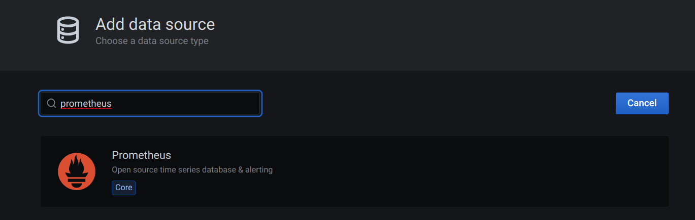

Prometheus Integration¶
Flower exports several celery worker and task metrics in Prometheus’ format.
The /metrics endpoint is available from the get go after you have installed Flower.
By default on your local machine Flower’s metrics are available at: localhost:5555/metrics.
Read further for more information about configuration and available metrics please.
Complete guide on integration of Celery, Flower, Prometheus and Grafana is here: Celery -> Flower -> Prometheus -> Grafana Integration Guide.
Configure Prometheus to scrape Flower metrics¶
To integrate with Prometheus you have to add Flower as the target in Prometheus’s configuration.
In this example we are assuming your Flower and Prometheus are installed on your local machine
with their defaults and available at localhost:<port number>.
To add Flower’s metrics to Prometheus go to its config file prometheus.yml which initially
will look like this:
global:
scrape_interval: 15s
evaluation_interval: 15s
scrape_configs:
- job_name: prometheus
static_configs:
- targets: ['localhost:9090']
and alter the scrape_configs definition to be:
scrape_configs:
- job_name: prometheus
static_configs:
- targets: ['localhost:9090']
- job_name: flower
static_configs:
- targets: ['localhost:5555']
You can also just point Prometheus at the example prometheus.yml file in the root of the Flower repository <https://github.com/mher/flower/prometheus.yml>
when you start it from the command line (note that you would have to set flower to point at localhost in your etc/hosts config for the DNS to resolve correctly):
./prometheus --config.file=prometheus.yml
Available Metrics¶
Below you will find a table of available Prometheus metrics exposed by Flower.
Name |
Description |
Labels |
Instrument Type |
|---|---|---|---|
flower_events_total |
Number of times a celery task event was registered by Flower. |
task, type, worker |
counter |
flower_task_prefetch_time_seconds |
The time the task spent waiting at the celery worker to be executed. |
task, worker |
gauge |
flower_worker_prefetched_tasks |
Number of tasks of given type prefetched at a worker. |
task, worker |
gauge |
flower_task_runtime_seconds |
The time it took to run the task. |
task, worker |
histogram |
flower_worker_online |
Shows celery worker’s online status. |
worker |
gauge |
flower_worker_number_of_currently_executing_tasks |
Number of tasks currently executing at this worker. |
worker |
gauge |
Using Metric Labels¶
You can filter received data in prometheus using promql syntax to present information only for selected labels.
We have the following labels available:
task - task name, i.e.
tasks.add,tasks.multiply.type - task event type, i.e.
task-started,task-succeeded. Note that worker related events will not be counted. For more info on task event types see: task events in celery.worker - celery worker name, i.e
celery@<your computer name>.
Example Prometheus Alerts¶
See example Prometheus alerts.
Add the rules to your alertmanager.yml config as in the alert manager’s documentation.
Example Grafana Dashboard¶
See example Grafana dashboard. You can import it easily in Grafana. Hover over the + button in the side bar menu -> Import -> Upload JSON file. The dashboard should give you a nice starting point for monitoring of your celery cluster.
Celery -> Flower -> Prometheus -> Grafana Integration Guide¶
In this guide you will learn how to setup each part of the stack to make it talk to the next one and achieve Celery monitoring solution with help of Flower.
Same as above we assume localhost usage and for ease of deployment I will use Pycharm configurations to start docker containers with necessary images. If you do not have docker installed on your system: download and install it please.
Start Celery Broker¶
Easiest is to use Redis Pycharm run configuration.
Or run:
docker run --name redis -d -p 6379:6379 redis
Set Up Your Celery Application¶
We are assuming that your Celery application has tasks in tasks.py file. The -E argument makes Celery send events which are required to produce Prometheus metrics.
Create celeryconfig.py in root of your Celery app. We are setting Celery to use Redis DB as the broker/backend in this example. Skip this if you configure your broker/backend already in another way (make sure to adjust further steps to that).
broker_url = 'redis://localhost:6379/0'
celery_result_backend = 'redis://localhost:6379/0'
Or download it from here.
Start your Celery app:
celery -A tasks worker -l INFO -E
When the app starts you should see this line:
-- ******* ---- .> task events: ON
Start Flower Monitoring¶
In your Celery application folder run this command (Flower needs to be installed):
celery flower -A tasks --broker=redis://localhost:6379/0
Configure and Start Prometheus¶
Create prometheus.yml file. Note its absolute path - we will use it to start the Prometheus docker image. For ease of use put it in the root of your Celery project (so that you can use Pycharm configuration below without any changes).
global:
scrape_interval: 15s
evaluation_interval: 15s
scrape_configs:
- job_name: prometheus
static_configs:
- targets: ['localhost:9090']
- job_name: flower
static_configs:
- targets: ['localhost:5555']
Run Prometheus inside docker:
You can use Prometheus Pycharm run configuration (may need to adjust the prometheus.yml path if it is not in root of your Celery project).
Or just start it via command line:
docker run --name Prometheus -v <ABSOLUTE PATH TO YOUR prometheus.yml FILE>:/etc/prometheus/prometheus.yml -p 9090:9090 --network host prom/prometheus
Now go to localhost:9090 and check that Prometheus is running. If everything so far was set up and started correctly, you should be able to see metrics provided by Flower in your Prometheus’s GUI. Go to Graph tab and start typing flower - the autocomplete should show you all available metrics.

Start Grafana¶
You can use Grafana Pycharm run configuration.
Or run it from the terminal:
docker run --name Grafana -d -v grafana-storage:/var/lib/grafana -p 3000:3000 --network host grafana/grafana
try to access its web GUI now by going to localhost:3000, use admin/admin for credentials. It will ask you to set up a new password - you may click skip for now.
Add Prometheus As a Data Source In Grafana¶
Click Configuration (settings icon) in the left side-bar. Then the blue Add data source button.

Search for Prometheus data source and click it (it should be at the top).
{kind=link}
Once in Prometheus data source configuration, use all defaults and enter the HTTP/URL parameter as below (which is the placeholder by the way):
http://localhost:9090

Scroll down and click Save & Test, if all is good a green banner will pop up saying Data source is working

Import The Celery Monitoring Dashboard In Grafana¶
Download Grafana dashboard.
Hover over the + icon in the left side-bar and click Import button.

Click Upload JSON file button and select the celery-monitoring-grafana-dashboard.json you have just downloaded.

Click on the Prometheus field and select a Prometheus data source.

Click Import to finish the process.
You should see a dashboard as on the image below. Congratulations!